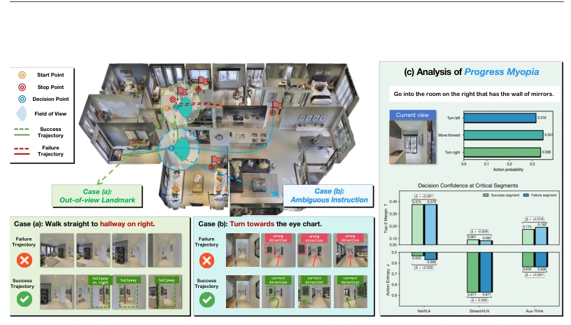
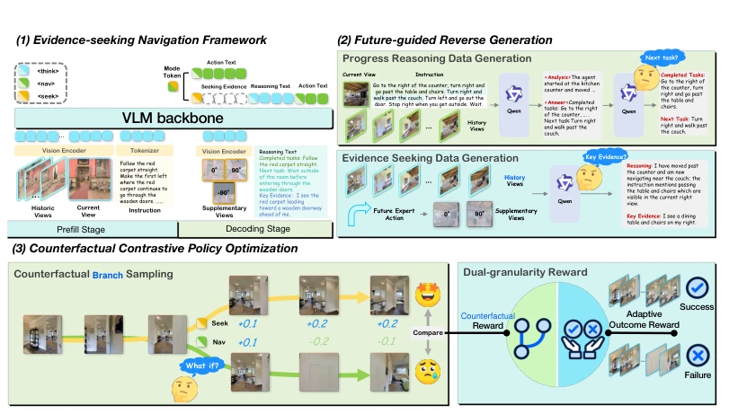
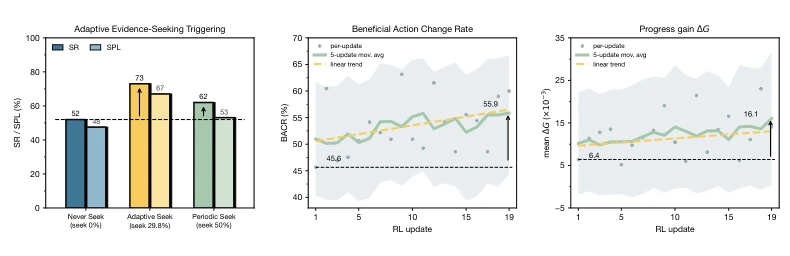
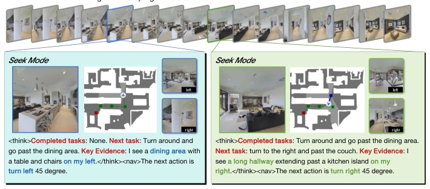
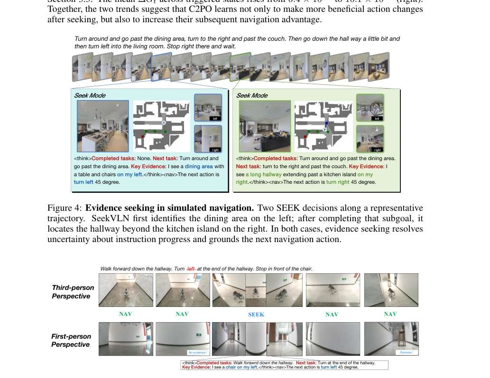
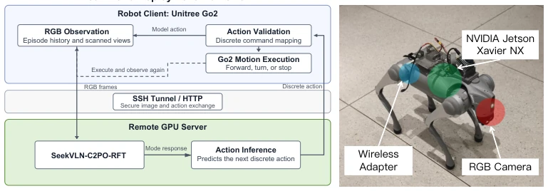

This paper administers a 'medicine for the eyes' to VLN models, precisely pointing out their prevalent 'Progress Myopia' (Progress Myopia). Current VLM navigation agents are too confident; despite insufficient key evidence, they dare to rush forward with eyes closed, leading to frequent getting lost at complex intersections. SeekVLN, through the strategy of 'seek evidence before action', transforms passive reasoning into active exploration, forcing the model to stop and 'look around' when uncertain. Although an additional 'seek' action is added, experiments prove this step was not in vain, with success rate improving by 12.7% on R2R-CE. However, will this 'diligent' mode increase inference latency? The paper does not elaborate in detail, but at least on simulation and real machines, it is indeed much more reliable than baseline models that only blindly trust themselves, serving as a lesson for embodied intelligence's 'blind confidence', but also implies an increase in computational overhead.
研究动机Motivation
VLN 任务要求代理在长视野指令下连续定位进度（Anderson et al., 2018）。然而，现有基于 VLM 的代理（如 NaVILA Cheng et al., 2025; StreamVLN Wei et al., 2025）通常只基于当前观测推理，一旦关键地标不在视野内，它们依然会自信地做出错误决策。这种“进展近视”导致代理无法识别证据不足时的不确定性。例如，下一个转弯的 landmarks 在视野外，代理却误判方向。之前的进展推理工作（如 Progress-Think Wang et al., 2026）虽增强了语义理解，但仍未解决环境不确定性导致的证据缺失问题。因此，需要一种能主动获取任务相关证据的机制，而非仅依赖历史观测，否则代理永远无法意识到自己“看不见”，这在真实环境中是致命的。
VLN tasks require agents to continuously locate progress under long-horizon instructions (Anderson et al., 2018). However, existing VLM-based agents (e.g., NaVILA Cheng et al., 2025; StreamVLN Wei et al., 2025) typically reason only based on current observations; once key landmarks are out of view, they still confidently make erroneous decisions. This 'Progress Myopia' (Progress Myopia) causes agents to fail to recognize uncertainty when evidence is insufficient. For example, landmarks for the next turn are outside the field of view, yet the agent misjudges the direction. Previous progress reasoning work (e.g., Progress-Think Wang et al., 2026) enhances semantic understanding but still does not solve the evidence missing problem caused by environmental uncertainty. Therefore, a mechanism capable of actively acquiring task-relevant evidence is needed, rather than relying solely on historical observations; otherwise, the agent can never realize it 'cannot see', which is fatal in real environments.

Figure 1: Illustration of Progress Myopia. Left: out-of-view landmarks (a) and ambiguous in- structions (b) make the current observation insufficient to determine the correct decision. Right: representative navigation agents show similar decision confidence and action entropy on both suc- cessful and failed segments, indicating that unreliable decisions can remain highly confident.
SeekVLN comprises two training stages. First is Future-guided Reverse Generation (FRG), utilizing offline expert trajectories to reverse-derive when evidence seeking is needed (e.g., side-viewing before turning) from future actions, and annotate key evidence. Establishing behavioral priors through SFT. Second is Counterfactual Contrastive Policy Optimization (C2PO), used for reinforcement fine-tuning. During decision-making, the policy outputs `SEEK` or `NAV` modes. If `SEEK` is selected, supplementary views (left/front/right) are acquired, and action is taken after progress reasoning. The core of C2PO lies in constructing counterfactual branches: starting from the same state, rollout `SEEK` and `NAV` paths respectively, and allocate credit by comparing short-term progress gains (geodesic distance reduction). This contrastive reward mechanism ensures the 'seek' action is only optimized when it truly improves subsequent navigation, avoiding ineffective exploration, and solves the credit assignment problem of delayed evidence seeking rewards in traditional RL.

Figure 2: Overview of SeekVLN. (1) The policy decides whether to navigate or seek evidence. (2) FRG reasons backward from future expert actions to determine where to seek evidence and annotate key evidence, while using historical context for progress annotation. (3) C2PO compares evidence- seeking and direct-navigation branches and jointly optimizes evidence-seeking and navigation.
Tested on Habitat simulator Matterport3D scenes, using val-unseen sets of R2R-CE and RxR-CE. Baselines include NaVILA, StreamVLN, etc. Metrics cover SR, SPL, NE. SeekVLN-C2PO-RFT achieves SR of 67.5% and SPL 61.4% on R2R-CE, significantly outperforming baseline Aux-Think. Ablation studies show FRG and C2PO are both effective, with C2PO particularly improving the 'when to seek' decision. Additionally, deployed on a real-world Go2 robot, the agent successfully identifies chairs outside the field of view and completes turns, proving generalization capability. Figure 3 shows adaptive seeking strategy outperforms fixed strategy, proving the model learned when to 'look' and when to 'walk', and BACR metric improves with training, indicating seeking behavior becomes increasingly precise.

Figure 3: Deep analysis of evidence-seeking behavior. Left: navigation success and path efficiency under three trigger strategies, highlighting the effectiveness of adaptive evidence seeking. Center: beneficial action change rate (BACR) during reinforcement fine-tuning, measuring the proportion of beneficial action changes. Right: mean short-horizon progress gain of the evidence-seeking branch over the direct-navigation branch, quantifying the navigation benefit of acquired evidence.

Figure 4: Evidence seeking in simulated navigation. Two SEEK decisions along a representative trajectory. SeekVLN first identifies the dining area on the left; after completing that subgoal, it locates the hallway beyond the kitchen island on the right. In both cases, evidence seeking resolves uncertainty about instruction progress and grounds the next navigation action.

Figure 5: Evidence seeking in real-world navigation. At the end of the hallway, the destination is not visible ahead and the instruction leaves the turn direction unspecified. SeekVLN seeks task- relevant evidence, identifies the chair to its left, and completes the task.

Figure 6: Real-world SeekVLN deployment. The Go2 robot handles sensing and motion, while a remote GPU server performs policy inference. The hardware setup is shown on the right.